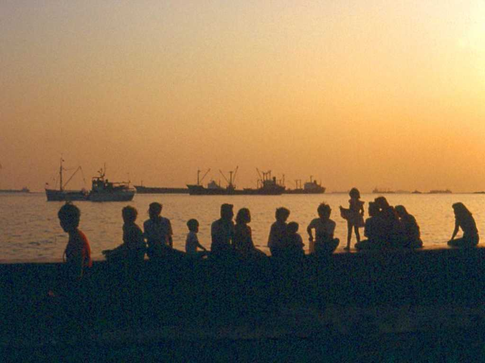
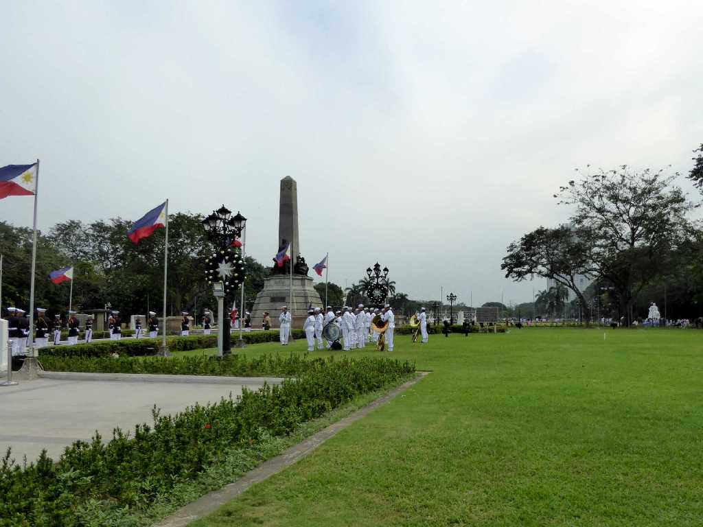
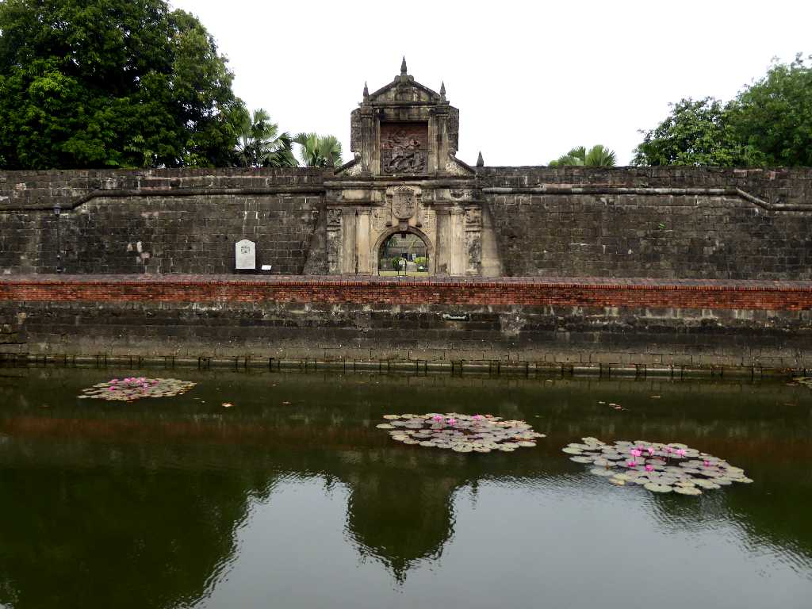
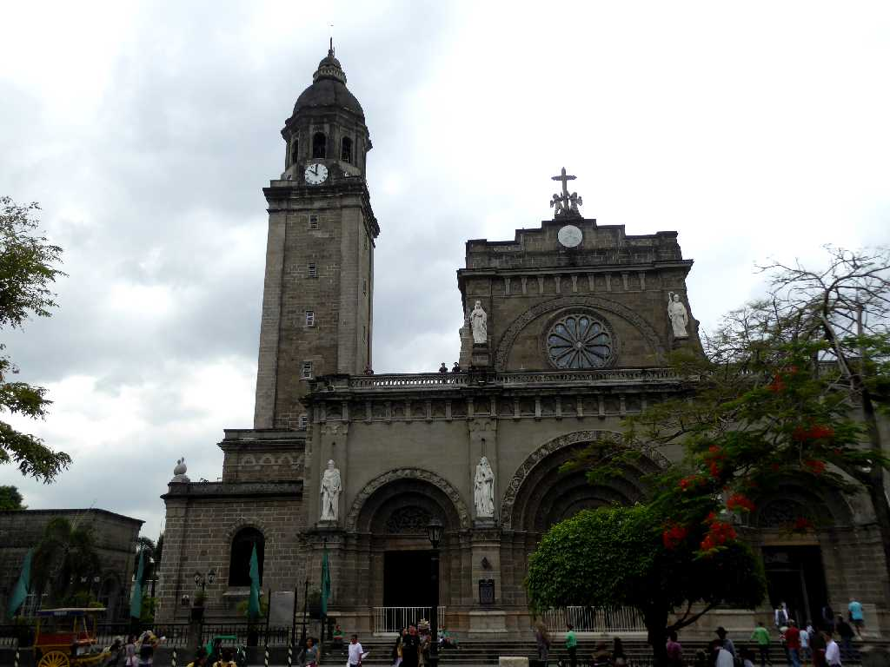
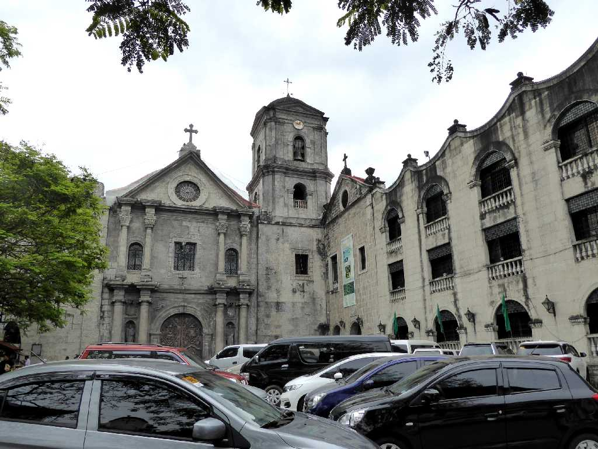
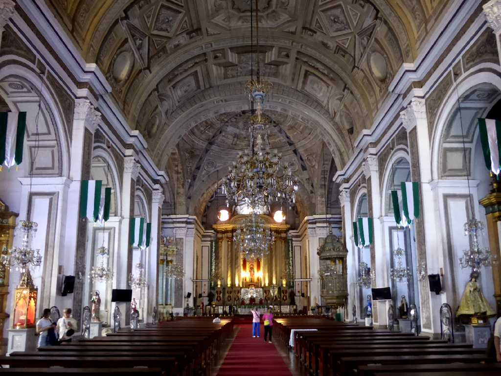
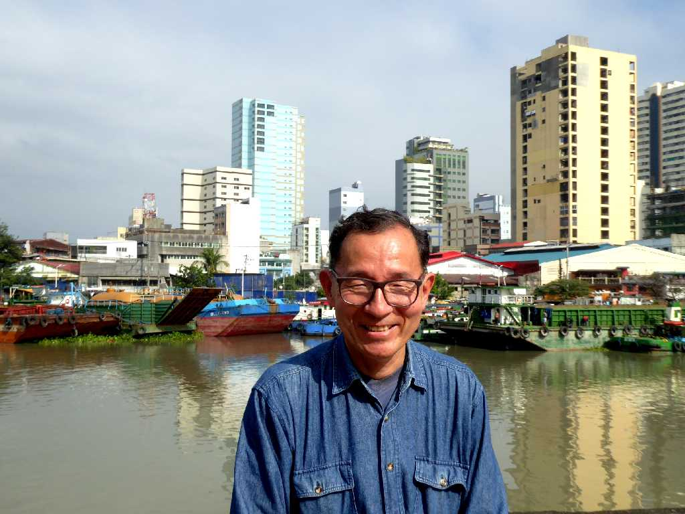

August 1973 Sunset Manila Bay
世界三大夕日で有名なマニラ湾の夕日は東洋の真珠とも言われ美しかった Bali Kushiro

Rizal Park Manila
約５０年ぶりの再訪問でリサール公園では新任大使の献花式が行われていた

Fort Santiago Manila
スペインにより１５７１年にサンチャゴ要塞を中心とした要塞都市がマニラに築かれた

San Agustin Church Manila
１５７１年に創設されたフィリッピンカトリック教会の総本山マニラ大聖堂で総司教はバチカンの枢機卿
Pipe Organ The Manila Cathedral
アジア最大のパイプオルガン

San Agustin Church Manila
１５８６年～１６０７年に創設されたサンオーガスティン教会はフィルピン最古の石造教会

Altar San Agustin Church

January 28 2019 Fort Santiago Pasig River Manila